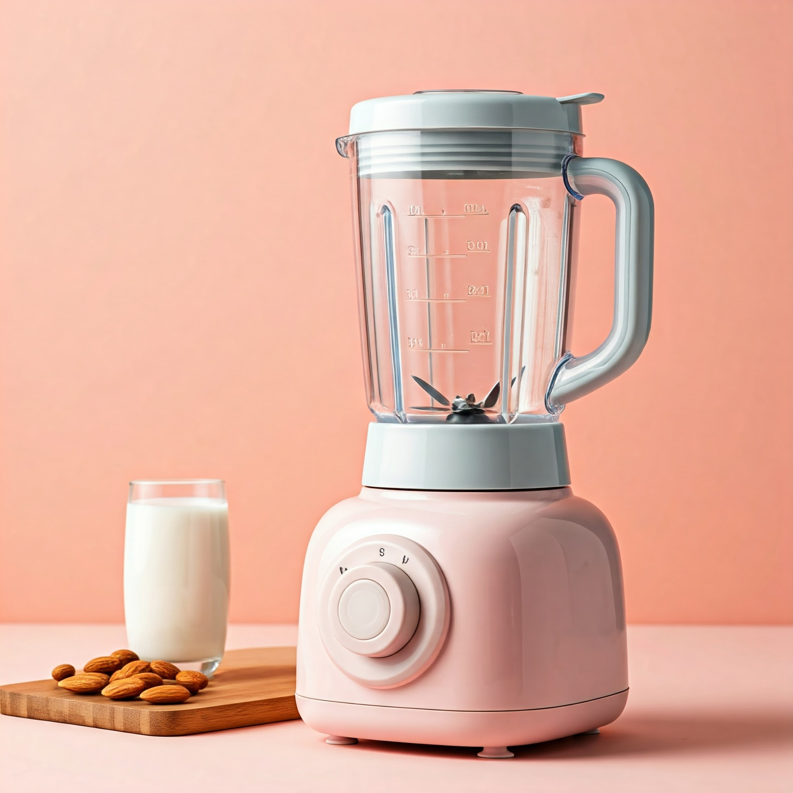
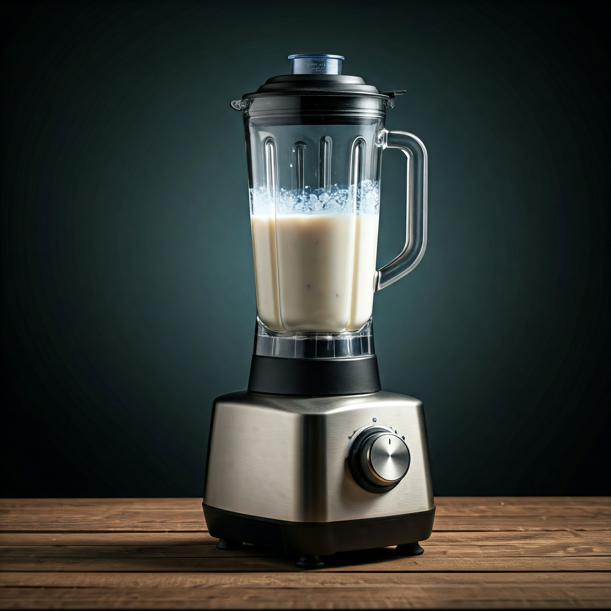
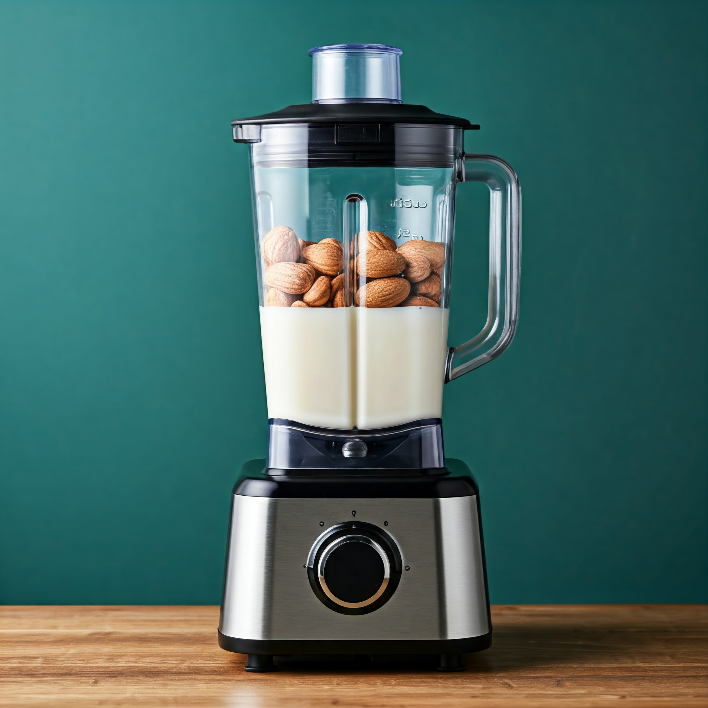
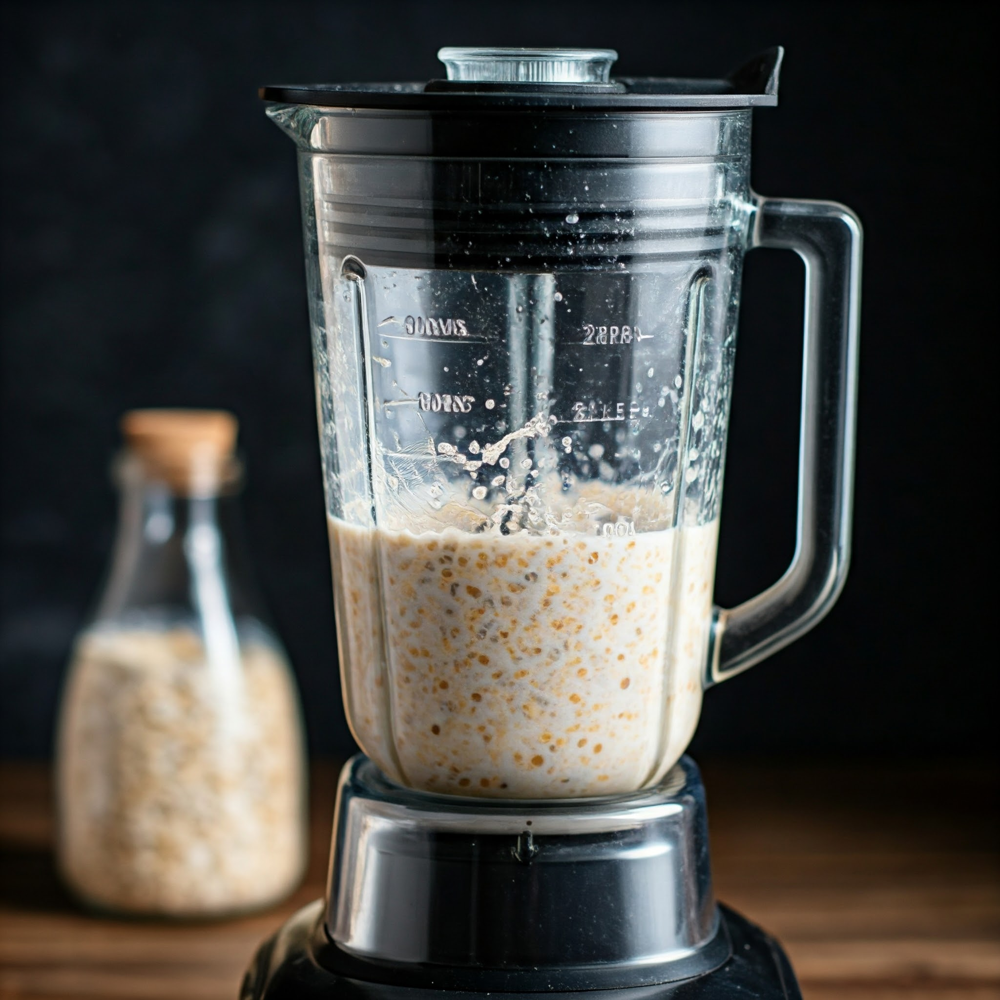

Our Product Range
At The Nutr, we understand that every individual has unique tastes, preferences, and dietary needs.
That’s why we offer a variety of plant-based milk options that cater to all sorts of lifestyles.
Whether you’re a vegan, lactose intolerant, gluten-sensitive, or just looking for a healthier
alternative to dairy, we have the perfect solution for you.
- Almond Milk Blends
- Oat Milk Blends
- Nut Milk Blends
- Specialty Plant-Based Milk Blends
Almond Milk – Pure, Nutritious, and Creamy
Almond milk is one of the most popular dairy alternatives, and for good reason. Made from finely
ground almonds and water, our almond milk is creamy, delicious, and packed with nutrients...
- Nutritional Benefits: Almond milk is rich in vitamin E, which is an
antioxidant
that supports skin health and the immune system. It’s also low in calories and fat, making
it a
fantastic choice for anyone looking to reduce their calorie intake. Our almond milk is
fortified
with calcium and other essential vitamins, ensuring you get the nutrients you need for bone
health, heart health, and overall wellness.
- Dietary Compatibility: Our almond milk is vegan, lactose-free, and
gluten-free,
making it suitable for a wide range of dietary preferences. Whether you’re following a
plant-based diet or simply avoiding dairy, almond milk is the perfect addition to your
smoothies, cereal, coffee, or just as a refreshing drink on its own.

Add To Cart
Oat Milk – Naturally Sweet, Smooth, and Versatile
Oat milk has quickly become a fan favorite for its naturally sweet flavor and creamy consistency.
Made from whole oats, our oat milk provides a nutritious, dairy-free alternative that’s rich in
fiber and plant-based protein.
- Nutritional Benefits: Oat milk is an excellent source of beta-glucan, a
type of
soluble fiber that helps regulate cholesterol levels and supports heart health. It’s also
fortified with calcium, vitamin D, and other essential nutrients that support bone health
and
immune function. Our oat milk offers a smooth and satisfying texture, making it perfect for
lattes, smoothies, and baking.
- Dietary Compatibility: Our oat milk is 100% vegan, lactose-free, and
gluten-free, so it fits easily into various dietary lifestyles, from vegans to those with
gluten
sensitivities. With its naturally creamy texture and mild sweetness, oat milk is ideal for
coffee lovers and anyone looking for a plant-based beverage that’s rich in nutrients.

Add To Cart
Nut Milk Blends – A Perfect Fusion of Nutty Goodness
For those who enjoy a variety of flavors and textures, our nut milk blends offer the best of both
worlds. We’ve combined almonds, cashews, and other nutrient-rich nuts to create a delicious,
creamy
milk alternative that’s packed with protein, healthy fats, and essential vitamins. These blends
are
designed to bring out the unique benefits of each nut while providing a rich and smooth flavor
profile.
- Nutritional Benefits: Nut milk blends are high in plant-based protein and
healthy fats, such as those found in almonds and cashews, which support heart health, brain
function, and skin health. They’re also naturally rich in antioxidants, like vitamin E, and
fortified with calcium and other essential nutrients. These blends offer a diverse range of
health benefits, making them a great choice for anyone looking to fuel their body with
nutrient-dense beverages.
- Dietary Compatibility: Like all our products, our nut milk blends are
vegan,
lactose-free, and gluten-free. They are a perfect choice for anyone following a plant-based
diet
or anyone who needs a dairy-free alternative to support their nutritional needs.

Add To Cart
Specialty Plant-Based Milks – For Every Taste
At The Nutr, we don’t just stop at almond and oat milk. We’re always innovating to bring you new,
exciting plant-based milk options that cater to different tastes and dietary needs. Our
specialty
plant-based milks include options like hemp milk, coconut milk, and macadamia milk—each crafted
with
unique ingredients to provide variety and exceptional taste.
- Nutritional Benefits: Specialty milks like hemp milk and coconut milk offer
their own set of benefits. Hemp milk is a great source of omega-3 fatty acids, which support
brain and heart health. Coconut milk, on the other hand, is rich in medium-chain
triglycerides
(MCTs), which may help boost metabolism and promote healthy energy levels. Each specialty
milk
is packed with the nutrients your body needs while offering a distinctive flavor that makes
every sip enjoyable.
- Dietary Compatibility: As with all of our plant-based milks, these
specialty
options are vegan, lactose-free, and gluten-free, ensuring that they can fit seamlessly into
any
dietary lifestyle. Whether you’re using coconut milk in your curries, hemp milk in your
smoothies, or simply enjoying macadamia milk in your coffee, these plant-based options add
diversity to your diet without compromising on health or taste.

Add To Cart
Quality Ingredients and Sustainability
At The Nutr, quality is our top priority. We’re dedicated to sourcing the finest organic, non-GMO,
and gluten-free ingredients for all of our plant-based milks. We believe that what you put into your
body matters, which is why we carefully select only the best ingredients, free from harmful
pesticides, chemicals, and additives.
We also understand the importance of sustainability in every step of the production process. Our
plant-based milks come in eco-friendly packaging that is recyclable and designed to minimize our
environmental impact. From farm to packaging, we are committed to reducing waste and promoting
eco-conscious living. By choosing The Nutr, you’re not only nourishing your body but also supporting
sustainable practices that protect the planet.
Eco-Friendly Packaging
We know that sustainability goes beyond just the ingredients. That’s why we’ve made it our mission to
use eco-friendly packaging that reduces waste and supports the environment. Our packaging is fully
recyclable, and we are continually working to reduce the carbon footprint of our operations. By
choosing our products, you’re making a positive impact on the planet with every purchase.
Why Choose The Nutr Products?
- Wide Variety: From almond milk and oat milk to specialty nut milk blends, The Nutr offers a
diverse selection of plant-based beverages for every preference and dietary need.
- Health Benefits: Our products are rich in plant-based protein, healthy fats, vitamins, and
minerals, making them the perfect choice for anyone looking to enhance their nutrition while
avoiding dairy and processed ingredients.
- Dietary Compatibility: All of our plant-based milks are vegan, lactose-free, and gluten-free,
making them suitable for a wide variety of dietary lifestyles.
- Quality Ingredients: We use organic, non-GMO, and gluten-free ingredients to create the purest,
most nutritious beverages possible.
- Eco-Conscious: Our packaging is designed to be sustainable and recyclable, helping reduce waste
and promote a healthier planet.
Shop The Nutr’s Products Today
Ready to experience the benefits of plant-based milks? Browse our full range of almond milk, oat
milk, and nut milk blends, and find your new favorite healthy drink today. Whether you’re replacing
dairy or simply looking for a nutrient-packed alternative, The Nutr has everything you need to
nourish your body and live more sustainably.
With every purchase, you’re supporting a brand that cares about your health, the environment, and the
future of sustainable living. Explore our products today and make the switch to a healthier,
plant-based lifestyle with The Nutr!
New Recipes